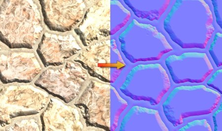

Урок 18
Шейдеры
Уровень: опытный
Версия Xtreme3D: 3.0.x
Автор урока: Gecko
Одной из самых интересных особенностей Xtreme3D является поддержка шейдеров. Понятие "шейдер" здесь имеет более широкое значение, чем в других движках. Обычно этим термином обозначают программы для графического процессора, которые выполняются для каждой вершины модели, либо для каждого пикселя модели на экране. Такие шейдеры в Xtreme3D тоже есть (см. следующий урок), но в общем смысле шейдером называется спецэффект, модифицирующий или заменяющий собой материал, к которому он прикреплен. Некоторые такие спецэффекты работают и на старых видеокартах, которые не поддерживают шейдерные программы, а некоторые основаны на встроенных в движок программах.
При помощи шейдеров можно наложить на объект несколько материалов, отрисовать контуры объекта, сделать объект рельефным или придать ему "эффект комикса". Рассмотреть все возможности встроенных шейдеров Xtreme3D в рамках одного урока невозможно, поэтому мы остановимся на одном - шейдере рельефа (Bump Shader).
Эффект рельефности сильно повышает реализм моделей - он используется в играх уже более 10 лет и за эти годы стал де-факто стандартом. Обычно рельефность достигается путем использования метода normal mapping (проецирование нормалей). На этом методе основан и Bump Shader в Xtreme3D. Суть normal mapping в том, что нормаль задается для каждой точки поверхности (в отличие от обычного вершинного освещения, где нормали задаются для каждой вершины, а затем просто интерполируются по поверхности полигона). Это делается при помощи карты нормалей (normal map) - специальной текстуры, в которой цвета пикселей сопоставлены с векторами нормалей (RGB = XYZ). Карту нормалей можно сгенерировать из карты высот или из высокополигональной геометрии путем трассировки лучей - такая функция есть практически во всех профессиональных пакетах 3D-моделирования.

Чтобы карта нормалей была инвариантна относительно вращения и переноса модели (то есть, оставалась неизменной при этих трансформациях), ее задают в особом пространстве, называемом пространством касательных (tangent space). В этом пространстве координатная ось Z соответствует перпендикуляру к поверхности, а оси X и Y, соответственно, взаимно перпендикулярным касательным к поверхности. Освещение также рассчитывается в пространстве касательных - направление света трансформируется в это пространство при помощи специальной матрицы, которую называют TBN по первым буквам ее компонентов - Tangent, Binormal, Normal (тангент, бинормаль, нормаль). Нормаль здесь - обычная нормаль вершины, а тангент и бинормаль - векторы, перпендикулярные нормали и перпендикулярные друг другу. Эти векторы вычисляет Xtreme3D. В настоящее время они поддерживаются только для объектов типа Freeform.
Несмотря на довольно сложную для начинающих теоретическую базу, использовать эффект рельефа в Xtreme3D очень легко - все сложности реализации скрыты под удобным API.
Сначала создадим материалы с необходимыми текстурами:
MaterialCreate('mBumpDiffuse', 'diffuse.png');
MaterialCreate('mBumpNormal', 'normal.png');
Теперь создадим шейдер рельефа и передадим ему текстуры:
bump = BumpShaderCreate();
BumpShaderSetDiffuseTexture(bump, 'mBumpDiffuse');
BumpShaderSetNormalTexture(bump, 'mBumpNormal');
BumpShaderSetMaxLights(bump, 3);
Функция BumpShaderSetMaxLights задает количество источников света, которые должен учитывать шейдер. Напомним, что Xtreme3D поддерживает до 8 источников света - то же относится и к шейдеру рельефа.
Теперь можно создать материал и прикрепить к нему наш шейдер:
MaterialCreate('mBump', '');
MaterialSetAmbientColor('mBump',
c_black, 1);
MaterialSetDiffuseColor('mBump',
c_white, 1);
MaterialSetSpecularColor('mBump',
c_ltgray, 1);
MaterialSetShininess('mBump', 32);
MaterialSetShader('mBump', bump);